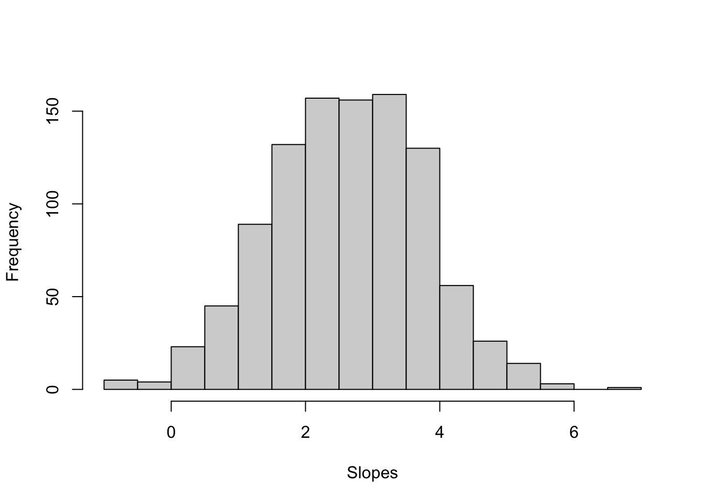

Sample Size and Power for Regression
Sometimes you might wonder, “how many subjects do I need for my study?”. Other times, you might hear the question in a similar fashion: “if I have x people, is the study worth at all doing?”.
Power analysis lets you determine the sample size required to detect an effect of a given size with a specified confidence level. It also allows you to determine the probability of detecting an effect of a given size with a given level of confidence, under sample size constraints. If the probability is unacceptably low, you should consider the experiment design and change it, or even abandon the experiment.
Recap of hypothesis testing
Variability of statistics
Fact: Statistics vary from sample to sample
For simplicity, we will outline the details for a simple linear regression model \[y= \beta_0 + \beta_1 x_1 + \epsilon\] but the concepts will generalise easily to the case of multiple predictor variables \(x_1, ..., x_k\).
A parameter is a numerical summary of the entire population. For example, imagine fitting a regression line to the population data, the slope of the line is a parameter. Parameters are typically unknown, as we often cannot measure the entire population due to time or money constraints.
A statistic is a numerical summary of a sample. An example is the slope of the regression line fitted to the sample data.
Typically, our data are collected from a sample of units from a bigger population. We can fit a linear regression model to the sample data and obtain the estimated coefficients \(\widehat \beta_0\) and \(\widehat \beta_1\). A numerical summary of the sample, such as the slope, is a statistic and is our best guess (based on the collected sample) of the unknown population parameter.
https://astools.datadesk.com/bvss.html
If we obtained a new sample, those estimated coefficients would be different. The following figure shows the population (grey dots) and three possible samples (red dots) along with the fitted line for each sample. Each line has its own slope, see the title of each plot.

Now, imagine doing this 1000 times. You would obtain many slopes, and you could plot them as a histogram.

We want to test whether the population slope is zero - that is, whether the slope of the line in the population is zero.